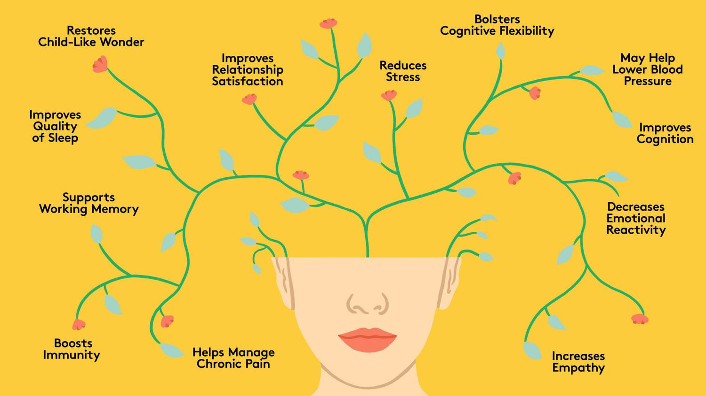

Nutrition and Diet

Proper nutrition and a balanced diet are crucial for overall health and wellness. Nutrient-rich foods provide energy, support bodily functions, and boost the immune system, reducing the risk of chronic illnesses. Healthy eating habits also enhance mental clarity, mood, and quality of sleep. By making mindful dietary choices, individuals invest in their long-term well-being, leading to a happier and more vibrant life.
Fitness and Exercise

Mental Health and Mindfulness
Lifestyle and Wellness